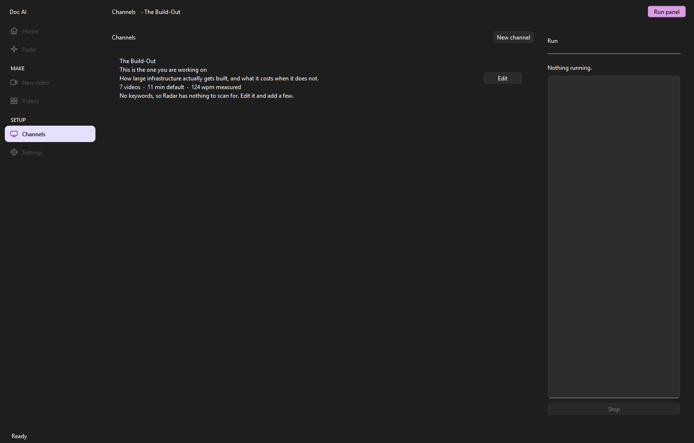
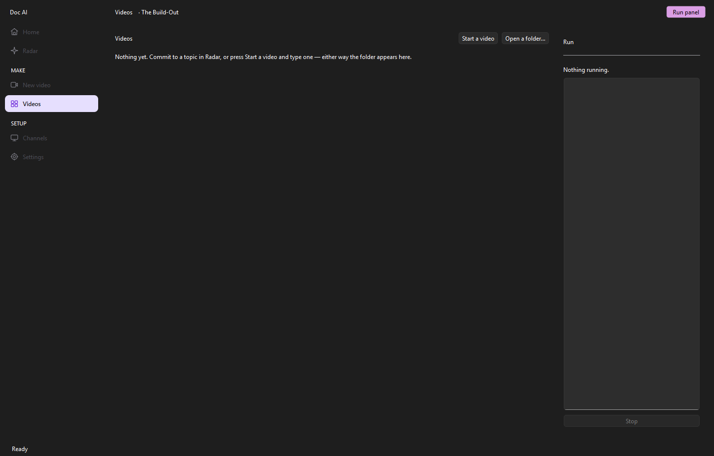
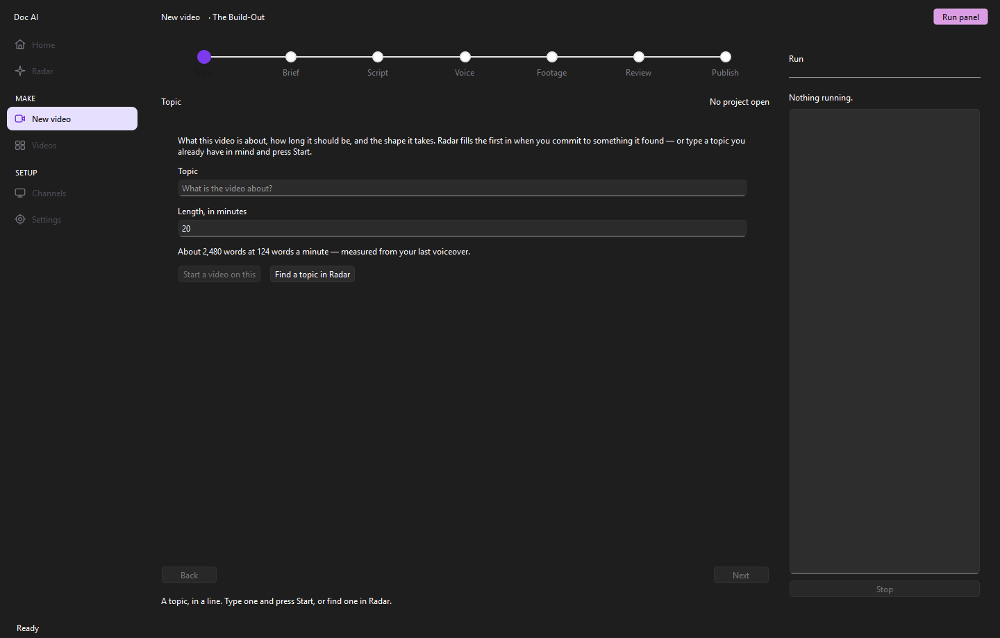

Doc AI · $79 a month
Describe your niche. Collect the documentary.
A Windows app for documentary and explainer channels — the older, higher-RPM audience where being wrong costs more than being boring. It finds a topic that is moving, researches it with a source and a confidence against every claim, writes it, narrates it, finds real footage, draws its own cards, cuts it against the narration and renders an MP4 plus a CapCut project.
- No card for the trial
- About $2 of API per video
- Windows 10 & 11
- Eight monetization checks on every cut
Set up once
Nothing in it knows what your niche is. You tell it, in sentences.
Two boxes on a channel matter more than every setting in the app put together, because they go into every prompt exactly as you write them.
45 to 65, US and UK, follows business news, comfortable with detail but not an engineer, often watching on a TV while doing something else.
This is the difference between a video made for 55-year-olds and one that sounds like every other AI channel.wsj.com, bloomberg.com, ft.com, reuters.com, cnbc.com
Same number of stories, from five newsrooms with standards desks instead of aggregators rewriting press releases.Audience and Tone, in your own sentences. Then four to ten keywords for Radar to search, and a narrator you pick once and never think about again.
Watch out for keywords that mean two things — "intel" returns stories about intelligence agencies as well as the company. "intel earnings" is tighter.
Music is optional and never generated or downloaded for you: music is the fastest way there is to collect a Content ID claim, so you drop in something you have licensed or you get narration only, which is a perfectly good documentary sound.
Making one
Seven steps. You read two of them.
Every step that spends money quotes a price first, and the Publish step tells you what that video actually cost.
-
STEP 1
Radar
Press Scan. It asks YouTube what has been watched in your niche in the last fortnight, Google News what has happened that YouTube has not caught up with, and Gemini to sort the difference and rate the fit.
Each card is scored out of 100 and shows what the score is made of. The number that matters is the outlier ratio: a million views on a channel that always gets a million tells you nothing; two hundred thousand on a channel that normally gets eight thousand tells you the topic pulled. Cards also carry a sweet spot — the length of the videos that actually over-performed on that topic.
Scanning works with no keys at all, so you can try it before setting anything up; the header says exactly which readings you are missing, so a thin list is never a mystery. And if you already know what you want to make, skip Radar entirely and type the topic.
-
STEP 2
Brief — read this one
Three research passes: read around it, fill in the numbers and the exact quotes, then a pass whose only job is to try to break the first two.
Every claim arrives with a source and a confidence, and every one has a switch. A claim switched off never reaches the script and stays in the file with the objection written next to it. Anything marked LOW is either hedged in the narration or should be switched off.
This is the only place a wrong number can be caught before it is narrated over footage and uploaded.
-
STEP 3
Script — read this one too
The shape is chosen for you from the nine the app knows, skipping the last three this channel used, and the target length is nudged a little either way.
That is deliberate. A channel where every video is twenty minutes and follows the same five beats is the thing YouTube demonetizes, however good any single one of them is. Reshuffle if you want a different shape; change it by hand if you know better.
The script comes back in blocks, each carrying what should be on screen while it is read — that is what the footage step searches with. Both are editable.
-
STEP 4
Voice
Pick a narrator once; it is remembered against the channel. You get a price before it spends anything.
Afterwards it measures how fast that narrator actually reads and stores it, so from the second video on, "20 minutes" means twenty minutes of your narrator rather than an average one.
-
STEP 5
Footage
One button. It searches every source you have switched on, ranks what comes back and downloads what the cut needs.
Ranking prefers clips long enough for the shot, never uses the same clip twice, and spreads the work across sources. Anything switched on but unusable — a provider whose key is missing — is named on the screen rather than skipped quietly.
- Pexels
- Pixabay
- Wikimedia Commons
- Openverse
- Internet Archive
- NASA
- Your own files
- fal.ai b-roll — off by default
- Clip grabber — off by default
-
STEP 6
Review
The cut, and eight checks against it. Failing checks warn; they never block. You know things the app does not.
Anything you do not like, press Swap — the alternates were already found, so re-rendering after a swap is seconds rather than the whole video. Use my own takes a file off your disk instead, counted by licence and credited in the description like everything else.
If one shot looks wrong, Preview renders that shot alone rather than making you re-render twenty minutes to look at four seconds.
-
STEP 7
Publish
Five titles, a description with chapters and credits, tags, and a thumbnail. Nothing is uploaded — you copy what you want and upload it yourself.
The
capcutfolder holds every clip numbered in cut order plus a shot list. Drop it on a timeline, put the narration underneath, and the edit is back — which is the way out if the render got something wrong.final.mp4description.txtthumbnail.pngcapcut/

Research
Every claim has a source and a confidence you can switch off.
For this audience, being wrong costs more than being boring. So the research is three passes, and the third one exists only to attack the first two — its objections are kept in the file next to the claims they are about, even for the claims you switch off.
The figure was confirmed in the company's own quarterly filing.
filed document · named publisher · datedTwo outlets report the number; neither names the original source.
two newsrooms · no primaryAttributed to an unnamed person familiar with the matter.
hedge it in the narration, or switch it offIllustrative rows, to show the shape of the screen. Real briefs carry your topic's own claims and your own sources.
The cards it draws
Some shots are not searched for. They are drawn.
Where a line is about a published headline, somebody's words, or a share price moving, the script says so and the app draws the picture instead of going looking for one.
| In the script | What you get |
|---|---|
| A headline | The headline set as a card, with the publisher and the date, and a highlighter that crosses the exact phrase the narration is making the point about |
| A quote | The words, the speaker, and their job at the time |
| A price | A chart of that ticker's closes over the range the script asked for, drawn in your channel's colour |
They are exact. The headline is the headline, not a stock photo of a newspaper.
They are yours. Which pushes the borrowed-footage share down rather than up — and that is one of the eight checks below.
They are checked. A headline, a quote or a ticker that is not in the brief is thrown away and that block gets ordinary footage instead, with a line in the run panel saying so. A card built on something a model invented would be the worst thing this app could put on a screen, so nothing reaches one that the research does not already contain.
Review › monetization safety
Eight rules, checked against the finished cut.
YouTube's inauthentic-content policy is aimed at video assembled from other people's work with nothing added. Narrated documentary over short, transformed, credited clips has always been fine. These are the numbers that keep you on the right side of that line, measured on the render rather than promised in a settings screen.
Cards the app drew sit outside the two rules about clips — biggest single source, and repeated shots — because both are about somebody else's footage, and a long block about one headline is two shots of that card with different moves on it, which is how a document has always been held on screen. The meter says so rather than leaving them out quietly.

Nine shapes
Your channel stops having a recognisable rhythm.
The channel remembers its last three shapes and cannot repeat one. The opening type rotates independently of the shape. The target length is jittered around whatever Radar recommended. Two videos a week apart come out structurally different, at different lengths, opening in different ways.
The beats inside each shape are written as instructions to a writer, not as headings. "Spend the first third establishing what everybody believed" produces a different script from "Section 1: Background".

Pricing
$79 a month, and about $2 of API per video.
You bring your own Gemini and ElevenLabs keys and pay them directly, at their prices. Four of the footage sources need no key at all; two more are free tiers. There are no credits to buy from us and no margin on your narration.
Monthly
Founding 20- Everything on this page, no tiers
- Unlimited videos and channels
- Silent signed updates
- Cancel any month
Use FOUNDER50 for 50% off the first month — first 20 customers.
Yearly
Save $358- The same thing, paid once
- Works out at seven and a half months
- Unlimited videos and channels
- Silent signed updates
Against $948 if you paid monthly for twelve months.
Founding 20
50% off your first month, for the first twenty customers. Same app, same trial, same support — it is for the people who buy before there are reviews to read.
What one twenty-minute video costs you in API fees
| Line | Cost | Notes |
|---|---|---|
| Research and script | $0.10 – $0.40 | Gemini Flash, roughly 3,000 words |
| Narration | about $1.90 | ElevenLabs turbo_v2_5 |
| Narration, richer voice | about $3.75 | ElevenLabs v3 or multilingual_v2 |
| Stock, archive, stills | free | Six sources, four of them needing no key |
| Thumbnail | about $0.04 | |
| AI b-roll | $1.50 – $4.50 | Off by default, and capped per video so a render cannot run away with your money |
| Typical, AI video off | $2 – $5 | The two levers are the ElevenLabs model and the AI-video cap |
Questions
Asked before buying.
Will this get my channel demonetized?
The honest answer is that nothing can promise it will not. What the app does is take the policy seriously in two places at once: the eight checks measure the finished cut for the things the policy actually describes, and the rotating shapes and jittered lengths stop the channel becoming the mass-produced, interchangeable output the policy is aimed at. Failing checks warn rather than block, because you know things the app does not.
Does it download video from YouTube?
Not unless you switch on the clip grabber, which ships off and does not install the tool it needs. Downloading from YouTube is against its Terms of Service, and conference and news clips carry Content ID claims as a rule. The grabber also does not search — you paste a URL and a timecode, so the judgement about what is fair to quote is made by a person.
How much of it do I actually have to read?
Two screens: the Brief and the Script. The Brief is where a wrong number is caught before it is narrated; the Script is where you fix anything that does not sound like speech. Everything else is one button and a progress bar.
Can I change the edit afterwards?
Yes, two ways. Swap any shot on the Review step and re-render in seconds, or take the CapCut folder — every clip numbered in cut order, plus a shot list — drop it on a timeline with the narration underneath, and the whole edit is back in your hands.
It sounds like an AI. Can that be fixed?
Almost always, and almost always in the Tone box on the channel. It is worth ten minutes: say what you do not want as well as what you do, in your own sentences. It goes into every prompt verbatim.
Is there a refund?
The fourteen-day trial is the refund — the whole app, no card taken, so you find out before you pay. If something breaks after you have subscribed, email beskicz@gmail.com and it gets sorted.